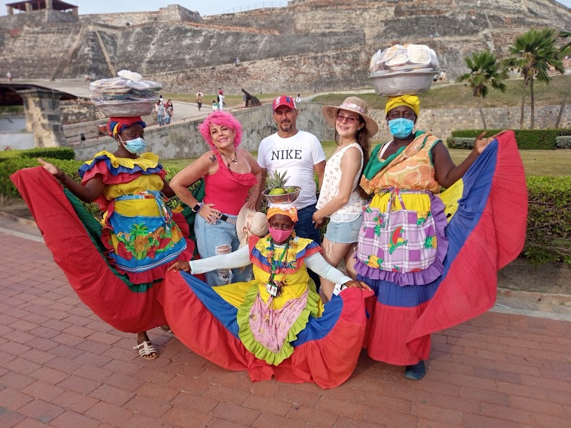

DESCRIPCIÓN PERSONAL
Mi nombre es Zoe Sophia Meneses Bayona, tengo 15 años, soy de la ciudad de Girón, Santander, soy estudiante de bachillerato y actualmente curso el grado décimo en la institución Nuestra Señora de Belén. Me encanta la música, amo cantar, se tocar la guitarra y el ukelele. También amo el mundo dígital y el arte, por eso me gustaría estudiar diseño gráfico como título profesional o ser una gran artista. En mi tiempo libre grabo videos cantando para YouTube, soy activa en mis redes sociales.
COVER DE LA CANCIÓN TO DIE FOR
Este es uno de los videos de mi canal de YouTube
Kids Again- Sam Smith
Esta es una de mis canciones favoritas de Sam Smith
Cuando Nadie Me Ve - Alejandro Sanz
Esta es mi segunda canción favorita del momento
| ESTUDIOS | GRADO | AÑO DE TERMINACIÓN | INSTITUCIÓN |
|---|---|---|---|
| PRIMARIA | QUINTO | 2016 | Colegio San Luis Gonzaga |
| TECNICA | |||
| TECNOLÓGICA | |||
| PROFESIONAL | |||
| INFORMACIÓN PROPIA |
Momentos Felices
Esta imágen me gusta mucho, ya que estoy en Cartagena en ella con mi familia, acababamos de salir del recorrido por el castillo de San Felipe de Barajas, fue una muy interesante y realmente unica experiencia, que si tuviera la oportunidad repetiría un millón de veces.Es importante recordar este tipo de momentos, porque son los que valoraremos cuando alguien en cercano de nuestra familia nos falte, por eso es que me parecen tan preciadas las sonrisas, los gestos, y sobre todo el tiempo que compartimos en familia o con la gente que amamos...